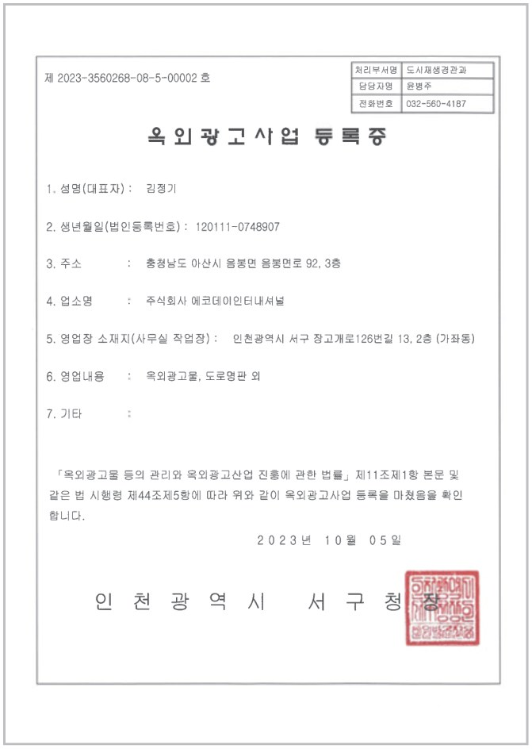
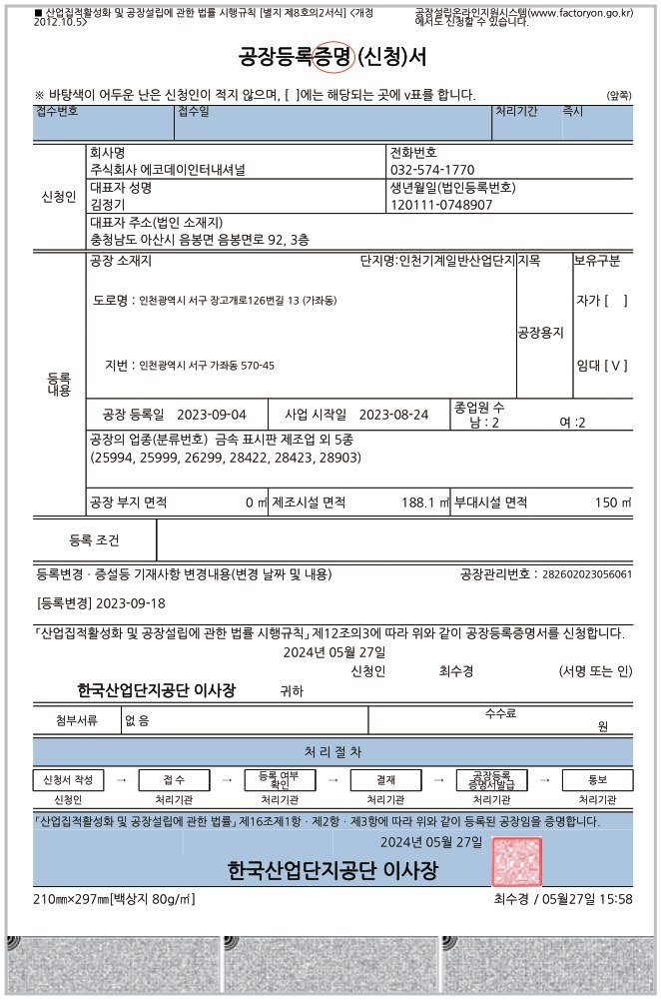
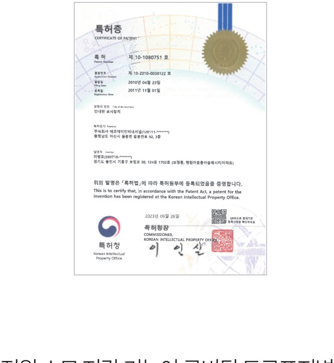

인증서 (Certificates) · 카탈로그 4P

건설업 등록증Construction Business Registration발급대상: 주식회사 에코데이ok

전기공사업 등록증Electrical Construction Registration발급대상: 주식회사 에코데이ok

옥외광고사업 등록증Outdoor Advertising Business Registration발급대상: 주식회사 에코데이ok

공장등록증명Factory Registration Certificate발급대상: 주식회사 에코데이인터내셔널needs_check (법인명 확인 필요)

벤처기업확인서Venture Enterprise Certificate발급대상: 주식회사 에코데이인터내셔널needs_check (법인명 확인 필요 · 유효 2024.07.02~2027.07.01)

연구개발전담부서 인정서R&D Department Recognition Certificate발급대상: 주식회사 에코데이ok

유망중소기업 인증서Promising SME Certificate발급대상: 주식회사 에코데이ok
지적재산권 · 특허증 (Intellectual Property) · 카탈로그 5P

전원 소모 저감 기능이 구비된 도로표지병Power-Saving Road Stud특허ok

도로 표지병의 제어 장치Road-Stud Control Device특허ok

도로표지병Road Stud특허ok

솔라 셀 모듈용 지주장치Solar-Cell Module Post Unit특허ok

조명식 도로표시판 겸용 보조등Illuminated Road-Sign Auxiliary Light특허ok

조명식 도로표시판 겸용 보조등을 위한 지지장치Support Device for the Auxiliary Road-Sign Light특허ok
조명장치Lighting Device특허ok

안내판 표시장치Information Display Device특허ok

보안등 겸용 안내표시장치Security-Light Information Display특허ok
가로등 지주에 설치되는 공공 서비스 편의 시스템Streetlight-Mounted Public Convenience System특허ok

차륜의 야간안전용 발광장치Nighttime Wheel Safety Illuminator특허ok

도로안내 표지판Road Sign디자인등록ok (복수 등록)

델리네이터Delineator디자인등록ok (복수 등록)

볼라드Bollard디자인등록ok